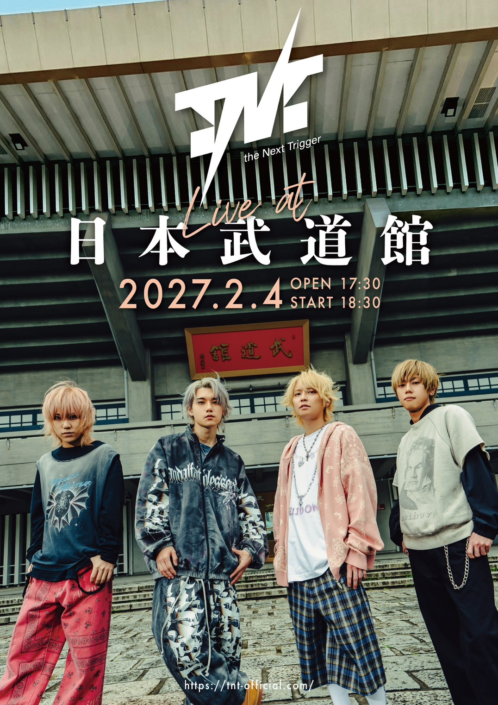
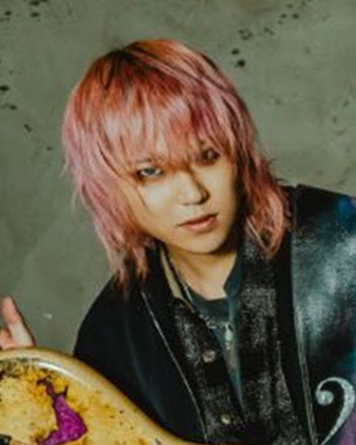
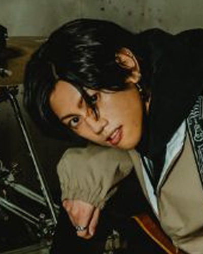

PRIORITY ENTRY
T.N.T FC先行
2026/5/1(金) 21:00 ～ 5/12(火) 23:59
※お申し込みにはT.N.T FCへのご入会が必要です。アップグレード抽選の対象は、各種先行受付でお申し込みいただいたチケットのみとなります。
※受付は終了しました。
NIPPON BUDOKAN
2027.02.04 THU
SUPERNOVA
OVERVIEW
2025年2月に活動を開始したロックバンドT.N.T。全国ツアーを経て、ついに日本武道館単独公演へ。

TICKET INFORMATION
T.N.T 日本武道館公演のチケット受付を開始しました。 FC会員の方は「T.N.T FC先行」、どなたでもお申し込みいただける先行受付は「オフィシャル最速先行」よりお進みください。
CONNECTION GUIDE
※チケット申込時のお願いチケットのお申し込み時は、できるだけ通信環境が安定した状態で操作いただくことをおすすめいたします。 通信が不安定な場合、再接続などの影響により、受付画面が正しく表示されない場合がございますのでご注意ください。
PRIORITY ENTRY
2026/5/1(金) 21:00 ～ 5/12(火) 23:59
※お申し込みにはT.N.T FCへのご入会が必要です。アップグレード抽選の対象は、各種先行受付でお申し込みいただいたチケットのみとなります。
※受付は終了しました。PUBLIC PRE-SALE
2026/5/13(水) 10:00 ～ 5/24(日) 23:59
※抽選受付となります。 ※アップグレード抽選の対象となります。受付開始後、申込URLへ遷移できるようになります。
※受付は終了しました。PUBLIC SALE
2026/5/25(月) 12:00 ～ 6/2(火) 23:59
期間内にお申し込みいただいた方を対象に抽選を行い、当落結果は2026年6月6日（土）15:00に発表予定です。当選された方は、2026年6月10日（水）までにお手続きを確定いただく必要がございます。 受付期間を過ぎてのお申し込みはできませんので、余裕をもってお手続きください。
ローソンチケット先行 ゼロチケ先行アップグレード抽選の対象は、T.N.T FC先行およびオフィシャル最速先行など、各種先行受付でお申し込みいただいたチケットのみとなります。 一般発売、イベント会場手売り、キャンペーン当選、当日引換紙チケット等は対象外となりますので、あらかじめご確認ください。
PROFILE
2025年2月始動。熱量と演奏力で一気にシーンを駆け上がる4人組ロックバンド。
メンバーは手越祐也（Vo.）、kyohey（Dr.）、Furutatsu（Ba.）、Ryu.（Gt.）。1st EP『ZERO』以降も話題作を連投し、『未来へ』や『RADIANT』などの楽曲で注目を集める存在へ。ツアー完走から日本武道館へつながる高揚感を、このセクションでは密度高く見せる想定です。
MEMBERS COMMENT
日本武道館という大きな舞台を前に、T.N.Tのメンバーそれぞれが今の想いを語ってくれました。 バンドとしての決意、ライブに懸ける熱量、そして当日会場に来てくださる皆さんへのメッセージ。 4人のコメントから、武道館ライブへ向けたT.N.Tの“今”を感じてください。
まず、バンドを結成してまだ長い期間が経っているわけではない中 で、日本人にとっても海外の方にとっても特別な場所である日本武道 館に立てることを、心から嬉しく思います。 僕自身、これまでスタジアム、ドーム、アリーナ、ライブハウスなど、さ まざまな舞台に立たせてもらってきましたが、日本武道館でライブを するのは初めてになります。 今までの経験の中で、まだ立ったことのない舞台やシチュエーション は少なくなってきていますが、武道館は初めてなので、どんな音の響 き方をするのか、どんな景色が広がっているのか、今からすごくワク ワクしています。 同時に、武道館には日本のみならず、世界を代表するたくさんのアー ティストが立ってきたと思うので、「武道館に立ったアーティスト」とい う名前に恥じないように、全力でパフォーマンスをして、僕ら T.N.T の音楽を全力でぶつけたいと思います。 一人でも多くの方にこのライブに来てもらえることを、心から願って います。 楽しみにしているので、よろしくお願いします。

全てバンドマンの憧れである日本武道館という場所で T.N.T の音楽 を響かせられる事を心から光栄に思います。 そして、それと同時に数々の歴史を積み重ねてきた日本武道館のステ ージに立つ事への強い責任と覚悟を感じています。 T.N.T を結成して 2 年。 この日本武道館ワンマンは今までで最大の挑戦になると思いますが、 これまで支えてくれた全ての人への感謝と、バンドとして築いてきた 全てをこの場所で解放して、結成当初からのコンセプトである日本の ロック、音楽シーンに風穴を開けられるような信念を轟音に乗せて、 T.N.T が描くその先の未来に向けてまた新たな一歩を大きく踏み出 せるよう、全身全霊で会場にいるひとりひとりに届けにいきます。 日本武道館の歴史に T.N.T が名を刻むその瞬間を一緒に作りましょ う。 よろしくお願いします。

ここに立てるのは当たり前ではなくて、これまで関わってくれた全て の人の積み重ねだと思っています。支えてくれた仲間、スタッフ、そし て何よりも応援してくれている人たち、その一つ一つがあって、この 場所に立たせて貰えます。 だからこそ、この一日はただの通過点にするつもりはありません。こ れまでやってきたこと、積み上げてきたものを詰め込みます。 今の自 分たちが出せる最高の形を作ります。 思想、信条というものは千差万別、人それぞれです。僕は僕が信じる 考え方や生き方で精一杯生きます。 人に考え方を押し付けるのではなく、音楽というものを通して「伝え る」ことが出来るのは僕にとってとてもとても嬉しいこと。 観てくれた人の中に何かが残る時間にしたい、あの日を境に何かが変 わったと思ってもらえるような、そんな一日にしたいと思っています。

人は自分が積んだものの上に立ち、そこからの景色を見る 支えてくれている家族、道中で出会ってきた友人やミュージシャン、そ して今僕の周りにいてくれるメンバーやスタッフや T.N.T の音楽を 聴いてくれる皆様はもちろん、 いつかの冬に、ギタリストの指がかじかんでは困るだろうと缶コーヒ ーをくれた方、初めて僕のギターにチップをくれた方、初めて僕の演 奏にコメントをくれた方まで、 今僕が立っているこの場所から全員しっかりと見えています。 全部覚えています。 そんな大小様々な積み重ねで今の僕はここに立っています。 自分だけの力で成し得た事なんて片手で数える程もありませんが、皆 様のお陰で成し得た事は皆様の手を借りないと数えられない程あり ます。ありがとうございます。 そしてすみません、この先もずっと手をお借りします。 そしてまた積み上げ、またそこから盛大に感謝を伝えます。 願っても立てないようなそんな夢の舞台、武道館。 僕はそこに立って、そこから見渡して、そして伝えます。 宜しくお願いします。